4 ggplot2
In Sections 1, 2 and 3, the functions used to create the plots and graphs we have seen so far exist in "base R". This means that the functions, such as barplot(), hist() and density(), can just be used without having to first load any specific packages.
One useful package that can be used to create plots and graphs is called ggplot2 (the "gg" stands for "grammar of graphics"). As the developers put it:
You provide the data, tell ggplot2 how to map variables to aesthetics, what graphical primitives to use, and it takes care of the details.
In order to use ggplot2, you must make sure it is first installed on your device and then load it into your RStudio session.
install.packages("ggplot2")
library(ggplot2)Graphs made using ggplot2 are done so in layers (different lines of code). Data is mapped to a geometric object (this tells R what type of plot to construct) and the variables are mapped to different aspects of the plot through an aesthetic function (this states, for example, which variables should be used for the x-axis and which for the y-axis). Other visual elements of the plot can be altered with additional layers.
The basic setup of a ggplot2 graph starts with the function ggplot(). The argument that this function takes is:
data =: this is a data frame which contains the data to be used in the plot.
Additional layers can be added after the ggplot() function using the + operator. For example, the standard setup for a graph using ggplot2 would be as follows in the code below.
ggplot(data = dataframe) +
geom_object(aes())Here, you would replace dataframe with the name of the data frame you want to use. The layer geom_object() would also be replaced with the function for the geometric object you want to use. The aes() function is where you can specify what variables you want to include in your plot.
Some of the geometric objects you can use with ggplot2, as well as their associated options for within the aesthetic function, aes(), are listed in Table 4.1.
| Geometric Object | Description | Aesthetic Options |
|---|---|---|
geom_bar()
|
Barplot |
x =: the variable to be plotted along the x-axis.fill =: the categorical variable to be used to split up the bars, or create separate side-by-side bars.
|
geom_histogram()
|
Histogram |
x =: the variable to be plotted along the x-axis.fill =: the categorical variable to be used to fill the bars a different colour for each level of the variable.
|
geom_density()
|
Density Estimate |
x =: the variable to be plotted along the x-axis.fill =: a categorical variable for which each level will be given a different colour under the density curve.linetype =: a categorical variable for which each level will be given a different line style.
|
4.1 Barplots
Let's make our first graph using ggplot2. We can recreate the barplot showing the number of patients from the EPIDURAL data set that fall into the three categories indicating how easy it was to find where to administer the epidural anesthetic, seen in Section 1.2.
To create the basic barplot, we only need to provide the arguments data = EPIDURAL within the ggplot() function. We want to use the geometric object function geom_bar() to create a barplot and provide x = ease within the aes() function which maps the levels of ease to the x-axis.
ggplot(data = EPIDURAL) +
geom_bar(aes(x = ease))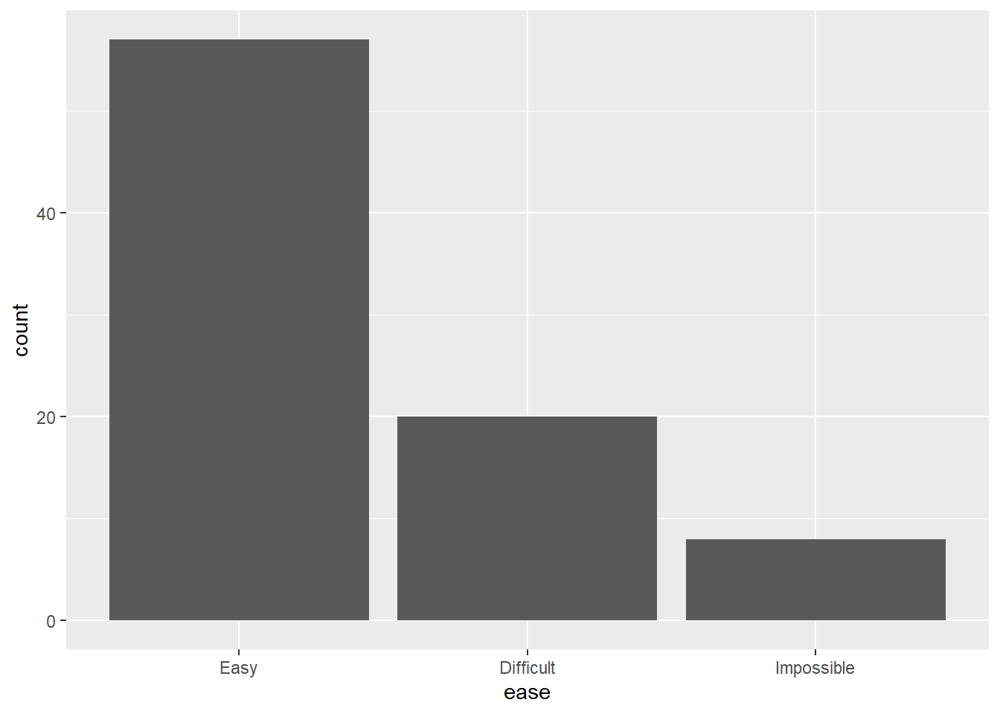
This creates a very simplistic barplot, where the bars are labelled with each level of the variable ease and are coloured grey. ggplot2 uses a default "theme" which colours the background grey and includes grid lines in white.
We can add titles and axes labels to ggplot2 graphs in an additional layer using the function labs(). This takes the arguments title =, x = and y = as shown in the code below.
ggplot(data = EPIDURAL) +
geom_bar(aes(x = ease)) +
labs(title = "Ease of Locating Anesthesia Administering Location in Patients",
x = "Ease", y = "Frequency")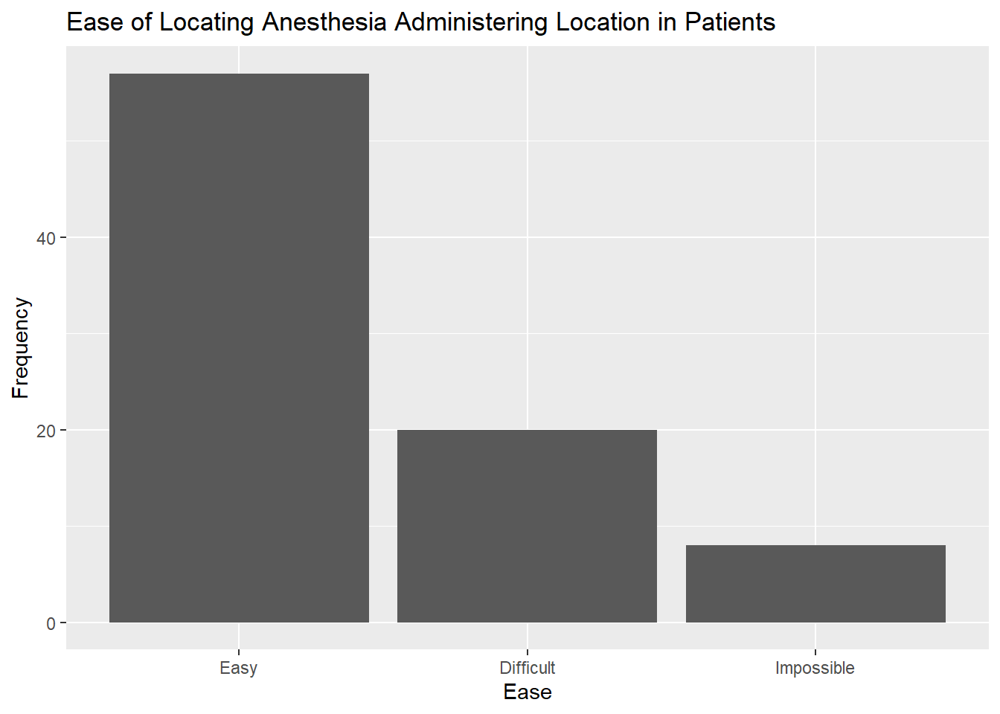
We were also able to produce barplots in base R where the height of each bar was split based on the levels of a categorical variable (for example, splitting by the different physicians in Section 1.5). We can do the same using ggplot2 by including the aesthetic argument fill = doctor in the aes() function. This means that we want to "fill" each bar to show how many of the patients in each level of ease were seen by each physician.
ggplot(data = EPIDURAL) +
geom_bar(aes(x = ease, fill = doctor)) +
labs(title = "Ease of Locating Anesthesia Administering Location in Patients",
x = "Ease", y = "Frequency")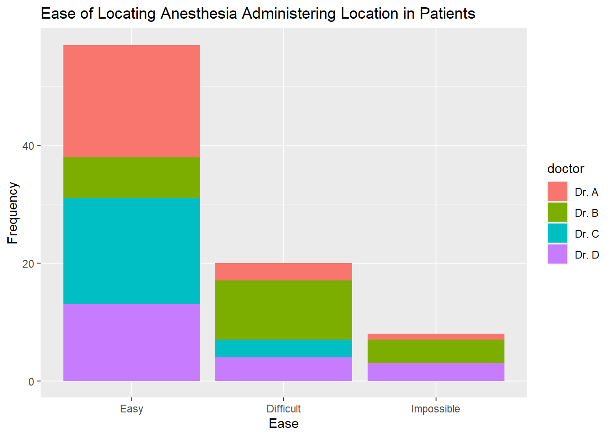
Note that the colours used by ggplot2 are chosen automatically. A different one is assigned to each doctor because we have used the argument fill = doctor. A legend is also included in the plot automatically, showing which colour corresponds to which doctor. The title "doctor" is used for the legend since this is the variable name.
To change the title of the legend, we need to include another layer in the code with the function guides(). We can specify the title using guide_legend("Title") as shown in the code below. This is passed to the argument fill = because "doctor" has been passed to the same fill = argument within the aes() function in geom_bar().
By default, barplots showing bivariate data are "stacked" in ggplot2. If we wanted to create separate bars for each doctor within the different levels of ease, then we need to include the argument position = "dodge" within the geom_bar() function. Note that this is outside the aes() function, as shown in the code below.
ggplot(data = EPIDURAL) +
geom_bar(aes(x = ease, fill = doctor), position = "dodge") +
labs(title = "Ease of Locating Anesthesia Administering Location in Patients",
x = "Ease", y = "Frequency") +
guides(fill = guide_legend("Physician"))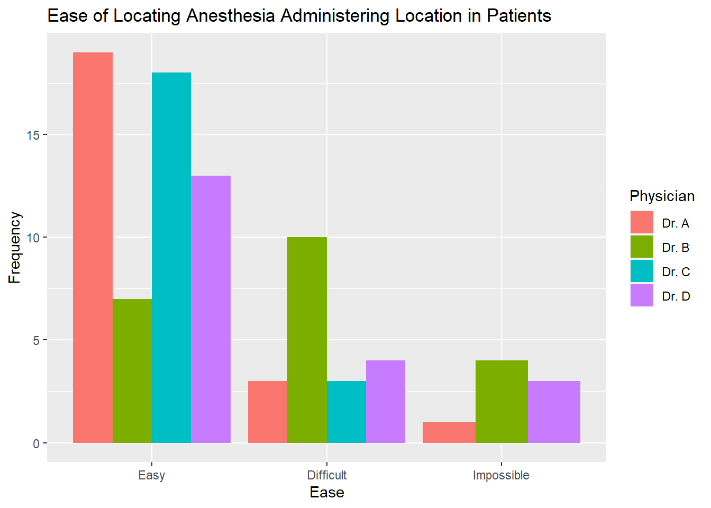
Complete the code below to create the barplot shown below, showing the number of passengers who survived and did not survive in each class from the TITANIC3 data set.
ggplot(data = TITANIC) +geom_bar(aes(x =, fill =, position =) +
labs(title = "Passengers Surviving the Titanic Sinking in each Class",
x = "Class", y = "Frequency") +guides(= guide_legend("Did the passenger survive?"))
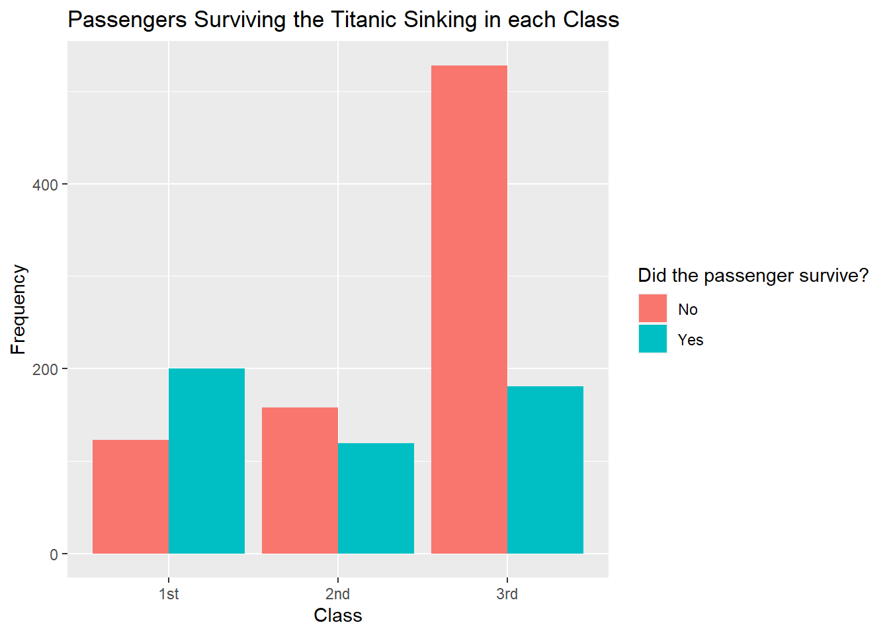
ggplot(data = TITANIC3) +
geom_bar(aes(x = pclass, fill = survived), position = "dodge") +
labs(title = "Passengers Surviving the Titanic Sinking in each Class",
x = "Class", y = "Frequency") +
guides(fill = guide_legend("Did the passenger survive?"))4.2 Histograms
Histograms are easy to make in ggplot2 using the function geom_histogram(). It is possible to specify the binwidth used to create the bars by including the argument binwidth = within this function (but outside the aes() function).
The code below creates a histogram showing the weights of all patients in the EPIDURAL data set. The binwidth has been set so that each bar has a range of 10kg.
ggplot(data = EPIDURAL) +
geom_histogram(aes(x = kg), binwidth = 10) +
labs(title = "Patient Weights from the EPIDURAL data set",
x = "Weight (kg)", y = "Frequency")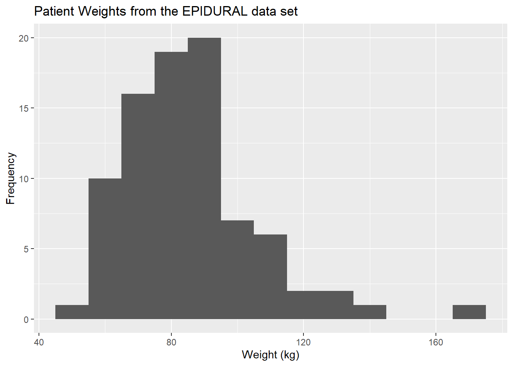
We can change the binwidth = argument so that the interval each bar covers is increased or decreased. In the code below, we have changed the argument to binwidth = 50 so each bar covers a range of 50kg, resulting in fewer and wider bars.
ggplot(data = EPIDURAL) +
geom_histogram(aes(x = kg), binwidth = 50) +
labs(title = "Patient Weights from the EPIDURAL data set",
x = "Weight (kg)", y = "Density")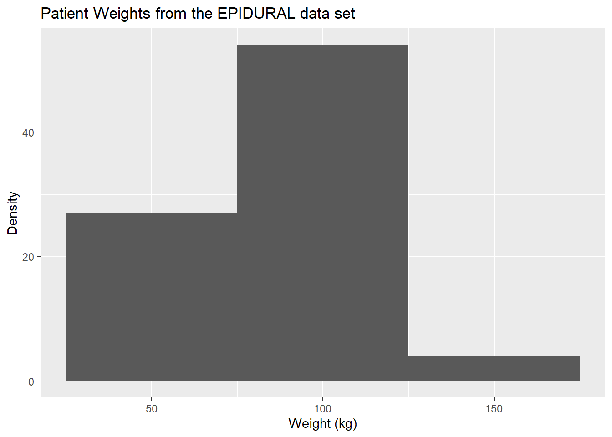
Create a histogram, using ggplot2, showing the ages of all passengers on the Titanic. Label your plot appropriately and consider using different binwidths to explore the shape of the distribution.
ggplot(data = TITANIC3) +
geom_histogram(aes(x = age), binwidth = 10) +
labs(title = "Ages of Passengers on the Titanic",
x = "Age", y = "Frequency")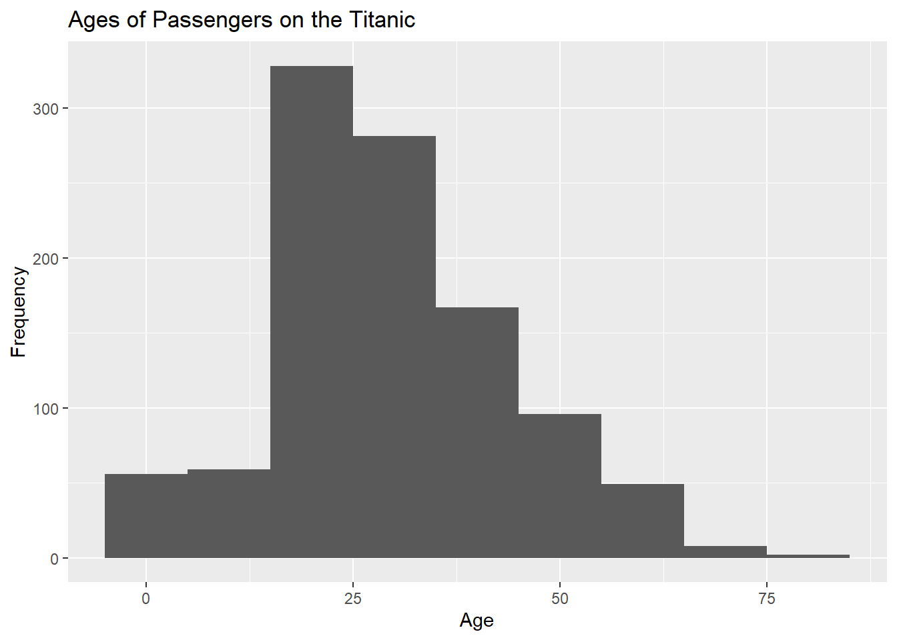
4.3 Kernel Density Estimators
To create plots of kernel density estimates in ggplot2, we use the function geom_density(). A simple plot showing the kernel density estimate of the weights of all patients from the EPIDURAL data set is created using the code below.
ggplot(data = EPIDURAL) +
geom_density(aes(x = kg)) +
labs(title = "Density of Patient Weights",
x = "Weight (kg)", y = "Density")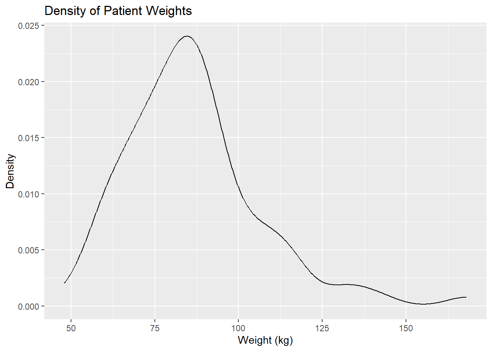
We are able to superimpose a density estimate above a histogram by creating the histogram and density curve as two separate layers after the ggplot() function. For example, in the code below the histogram is created first and then the density plot is built on top of it.
Remember that the histogram needs to be a density histogram, and not a frequency histogram, in order to be able to superimpose a density curve. We can create a density histogram in ggplot2 by including the argument y = after_stat(density) within the aes() function in geom_histogram().
ggplot(data = EPIDURAL) +
geom_histogram(aes(x = kg, y = after_stat(density)), binwidth = 10) +
geom_density(aes(x = kg)) +
labs(title = "Density of Patient Weights",
x = "Weight (kg)", y = "Density")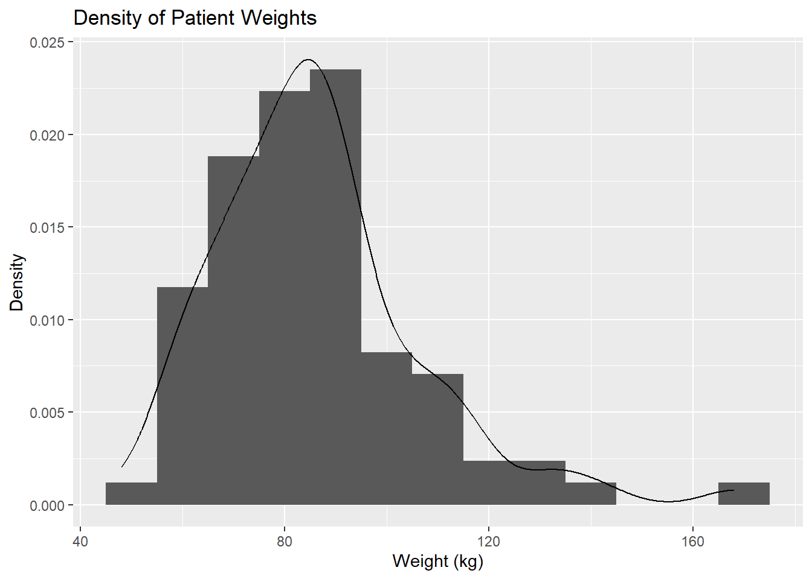
Section 3 looked at comparing the distributions of BMI values for patients in the two treatment groups (traditional sitting and hamstring stretch). We can use ggplot2 to create side-by-side plots showing a histogram and kernel density estimate of these distributions for the two groups.
In order to create a plot for each treatment group, we need to use the function facet_grid(). This splits the plots made across different rows and/or columns. We need to include the names of categorical variables in the style of a formula using the ~ operator. The levels of the variable to the left of ~ will make up the rows, and if a variable is included to the right of ~ then the levels of this will make up the columns that the plots are split across. Using the formula . ~ treatment means we have one column for the traditional sitting group and another for the hamstring stretch group.
In the code below we have coloured the histogram a different colour for each group using the argument fill = treatment within the aes() argument in geom_histogram(). This automatically creates a legend showing which colour is for which group, but because the columns of the plot are already labelled, this legend is unnecessary. We can remove the legend by including fill = "none" within the guides() argument.
ggplot(data = EPIDURAL) +
geom_histogram(aes(x = BMI, y = after_stat(density), fill = treatment), binwidth = 5) +
geom_density(aes(x = BMI)) +
facet_grid(. ~ treatment) +
labs(title = "Density of Patients' BMI",
x = "Weight (kg)", y = "Density") +
guides(fill = "none")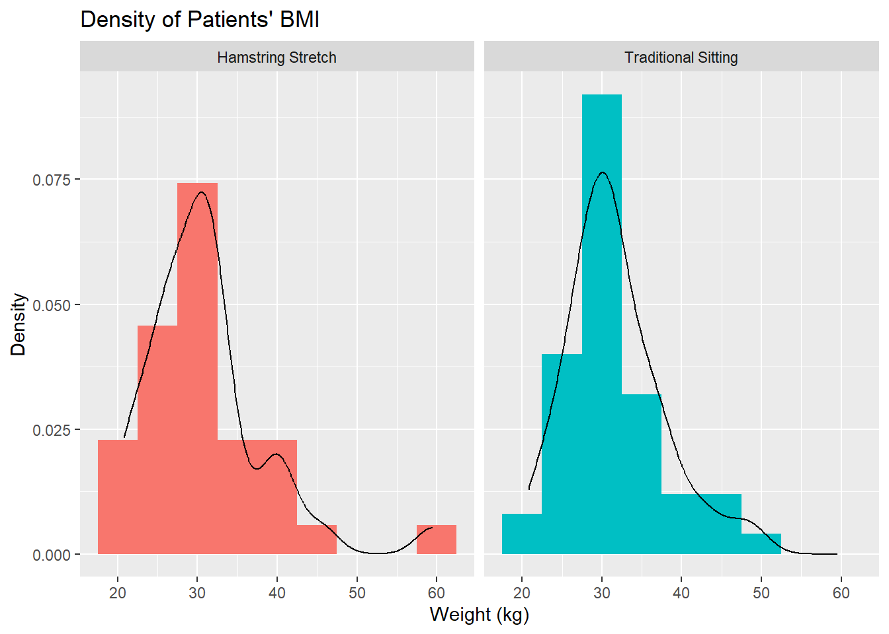
We can see from the plots above that both distributions are right skewed, however the skew in the hamstring stretch group is slightly more extreme.
Complete the code below to create the following histogram and density plots which show the distribution of passenger age for each class of passengers on board the Titanic.
ggplot(data = TITANIC3) +geom_histogram(aes(x = age, y =, fill =),
binwidth = 5) +
geom_density(aes(x = age)) +facet_grid() +
labs(title = "Density of Passenger Ages",
x = "Age", y = "Density") +
guides(fill = "none")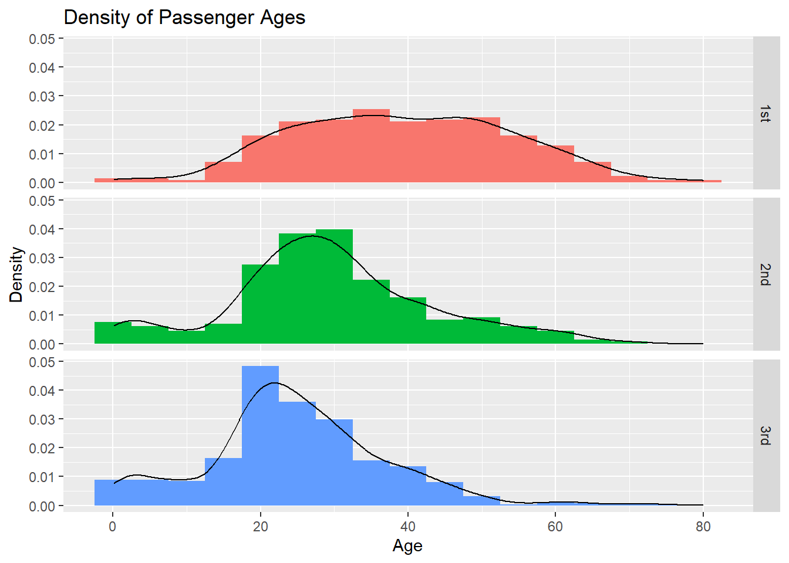
ggplot(data = TITANIC3) +
geom_histogram(aes(x = age, y = after_stat(density), fill = pclass),
binwidth = 5) +
geom_density(aes(x = age)) +
facet_grid(pclass ~ .) +
labs(title = "Density of Passenger Ages",
x = "Age", y = "Density") +
guides(fill = "none")